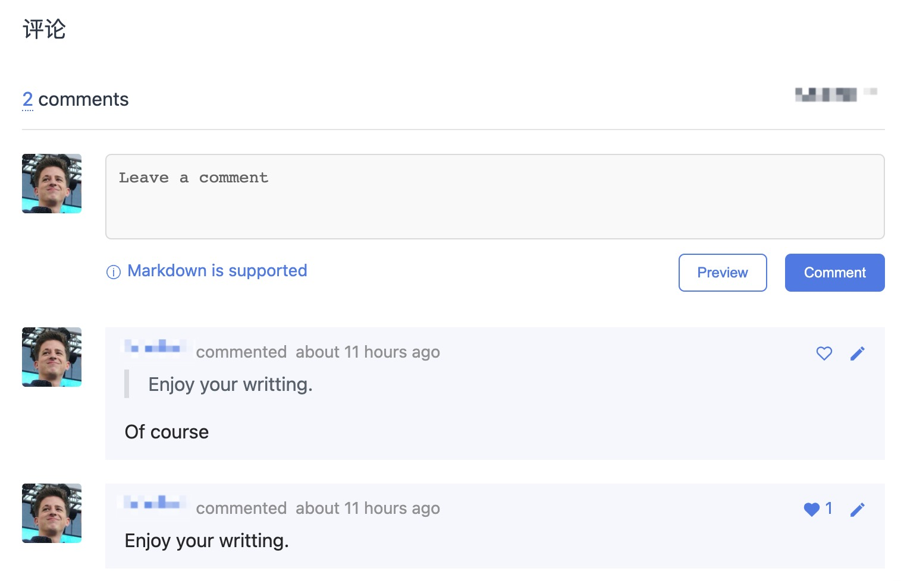
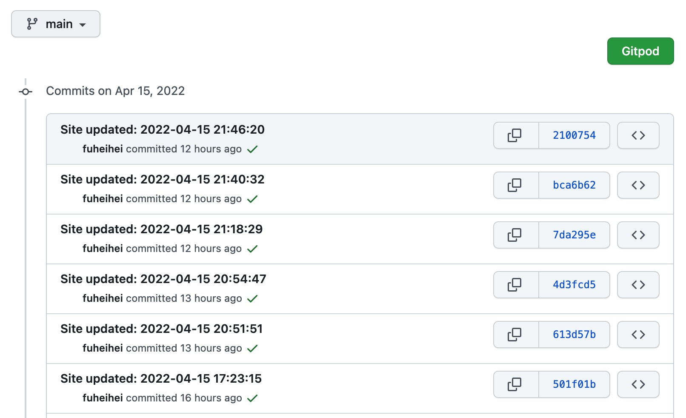

个人博客搭建
搭建个人博客 hexo+kaze+gitalk。
我们经常会看到github有人有<username>.github.io形式的个人博客网页，他们是怎么做到的呢？
仔细观察，不少人的博客底部还会出现 “powered by hexo” 或者 “由hexo强力驱动” 的字样
通过下文，你也可以搭建一个自己的github pages博客
1.Github Pages
没错，浏览器中url为<username>.github.io形式的博客是github提供的一种博客功能，这个功能叫做github pages。
当用户在github上新建了<username>.github.io的public的仓库(<username>和自己的github用户名一致)，就可以为自己生成对应的github pages。并且其他访客可以通过这个url访问你的博客。
2. hexo项目构建
2.1用 hexo初始化项目
第一步，安装hexo
通过hexo-cli的方式，构建博客项目会更容易。
环境：需要git，node环境(>=12.0.0, 推荐nvm安装node)
1 | |
详细安装配置可以看hexo官网文档
(简便安装上面一行指令就够了)
第二步，接着hexo在本地构建项目
1 | |
常用的hexo指令
1 | |
2.2 新建github pages 仓库
新建一个github项目，项目名为``{username}.github.io，项目是public的而非private的。
修改本地hexo项目根目录下的 _config.yml文件，添加 deploy 相关的属性。
需要指定发布项目的repo，这里因为我们用的是github pages，github pages通常是 {username}.github.io`形式的public仓库。
1 | |
3.博客主题的选取
hexo构建的博客项目可以选取很多开源的hexo主题，类似于qq空间的皮肤，我们通过修改根目录下_config.yml中的属性theme: 就能指定对应的皮肤。
例如
想要选择的主题是anatole
将主题项目 git clone 到项目中的themes文件夹下，修改项目根目录下的_config.yml中的属性
1 | |
需要注意的是，如果指定为anatole，那么项目必须得有theme/anatole文件夹。
其他丰富的hexo主题请查阅: https://hexo.io/themes/
4.写文章
4.1 新建文章
1 | |
例如 hexo new post how-to-build-my-blog
[layout]可以是 post、page 和 draft，其位置和source/_post，source/page，source/_draft是相关联的。
4.2 发布文章
1 | |
hexo d可以将本地的hexo 项目转换成github pages需要的项目发布在你的github repo中，在浏览器输入 <username>.github.io 就能看到和本地一样的hexo博客了。
5.评论系统
完善的博客还应该提供访问用户讨论的机会。
gitalk的demo图
评论系统有很多，出于免费和效率考虑，此处使用gitalk
gitalk是github提供的评论系统，免费；同时gitalk的用户评论文章的内容可以在repo生成对应的issues，可以起到邮件通知的效果，保证及时回复用户。
(1)申请OAuth Apps
在github -> settings -> Developer Settings -> OAuth Apps 中申请新的OAuth项目。
Authorization callback URL 和 Homepage URL 属性都写<username>.github.io博客的地址。
并点击按钮，生成 clientSecret，下面会用到。
(2)填写gitalk的属性
修改项目中的_config.yml文件，我的在theme/hexo-theme-Kaze/_config.yml中。修改对应gitalk配置的部分。
1 | |
6.发布博客
本地测试查看无误后，使用命令hexo clean && hexo deploy可以上传change提交到{username}.github.io项目中。
提交结果如下图所示
提交记录demo图
可以看到hexo deploy指令会自动生成git的提交到repo上，通常是以时间作为commit的message。
7. 总结
经过上述的步骤，相信你也会有一个较好的博客了，接下来开始享受写作吧！